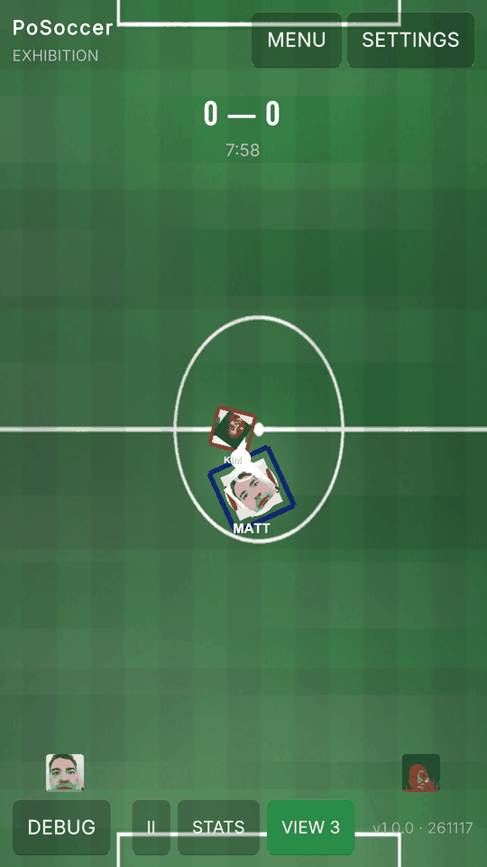
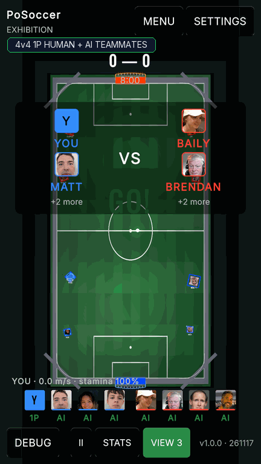

1v1 Trained AI Duel (MATT vs KIM)
Showcases the streamlined portrait HUD, procedural striding legs & kick follow-through (Agent_Limbs), ball-tracking faces (Agent_Faces), and 2.5D ball spin/loft.
Live 1080×1920 portrait captures from Unity PlayMode after the 20-item architecture,
FPS, and roster cleanup pass. Includes animated gameplay GIFs and annotated breakdowns of every new feature.
Sequential frames captured directly from live SCN_Exhibition PlayMode matches.

Showcases the streamlined portrait HUD, procedural striding legs & kick follow-through (Agent_Limbs), ball-tracking faces (Agent_Faces), and 2.5D ball spin/loft.

High-velocity shot into the deformable spring-Verlet goal net (Agent_GoalFrame), floodlight celebration pulse, commentary callout, and Agent_Replay letterbox playback.

New Agent_HumanController driving Blue Slot 0 (YOU) alongside 3 trained AI teammates against 4 Red brains, with auto-scaled pitch and live stamina telemetry.
Summary of recent simulation/presentation upgrades alongside the 20-item cleanup pass.
1P: OFF / YOU toggle on the menu puts you in Blue Slot 0 for 1v1 or 4v4.Agent_HumanController.Agent_Limbs.Agent_BallHeight adds vertical loft, shadow scaling, and header collisions while keeping RL observations 2D.Agent_GoalFrame simulates spring-Verlet net ripples pinned to the posts.Agent_Weather adds Dry / Wet / Muddy / Snowy turf multipliers in exhibition only.VIEW cycles STAMINA, INTENT, LANES, VISION, TRACER, BRAIN, XG FIELD, and SKIDS.Agent_BrainCam + Agent_Saliency expose raw 4-channel outputs and occlusion saliency live.STATS toggles the model win-chance bar, ticker, and live player telemetry stream.DECOY, Agent_BrainHub, Agent_Wager, and Agent_Wear.Tilemap crowd rebuilds & 10 idle flashbulb Light2Ds with static perimeter rings; cut permanent lights from 7 to 3.MaterialPropertyBlock SRP-Batcher breaks and gated RL dense rewards/telemetry to training only.Click any card to inspect full-size. Highlights map directly to runtime UI Toolkit and pitch bounds.